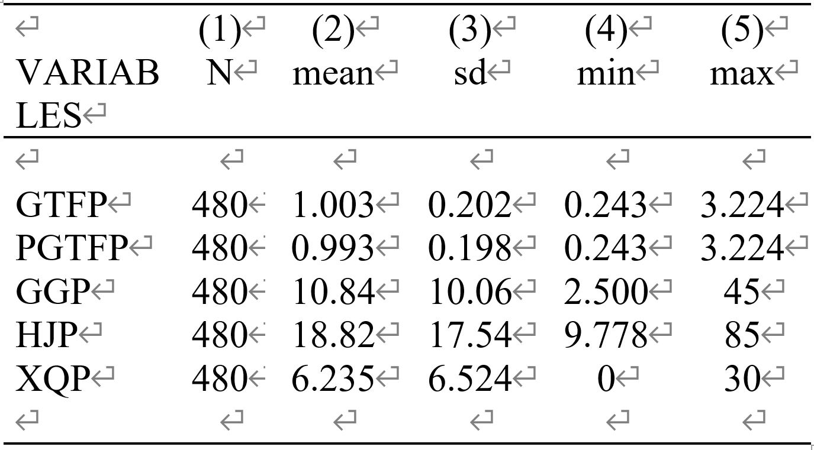
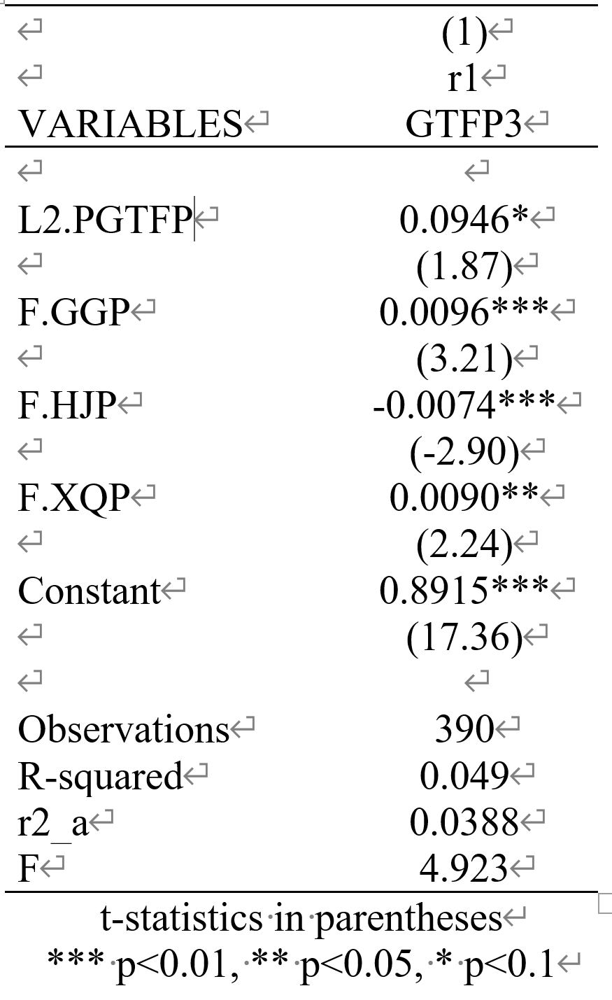

Main Content
- Quantified and analyzed policies related to China's photovoltaic industry.
- Used the SBM-GML model to measure Green Total Factor Productivity (GTFP).
- Conducted empirical analysis on the impact of policy tools on GTFP.
- Found that both supply-side and demand-side policy tools had a significant positive effect on Green Total Factor Productivity.
Keywords
Policy evaluation;Photovoltaic Industry Policies;Photovoltaic Industry
Figures and Tables(Not all)
Descriptive

Regression Result
